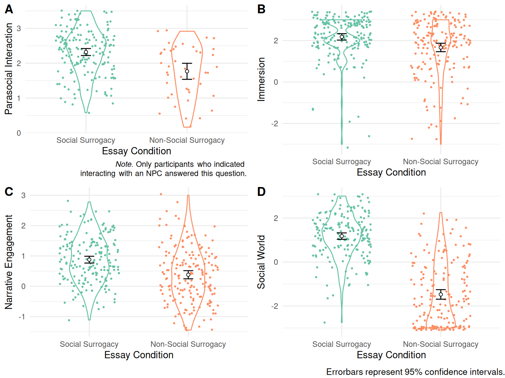
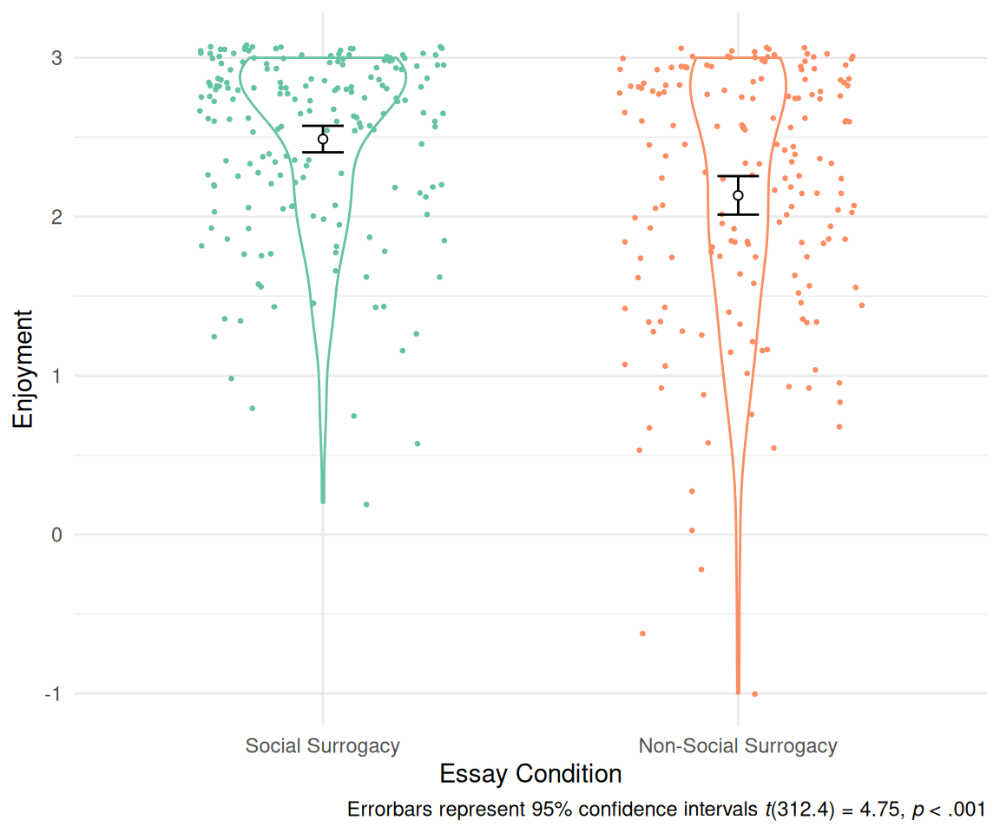
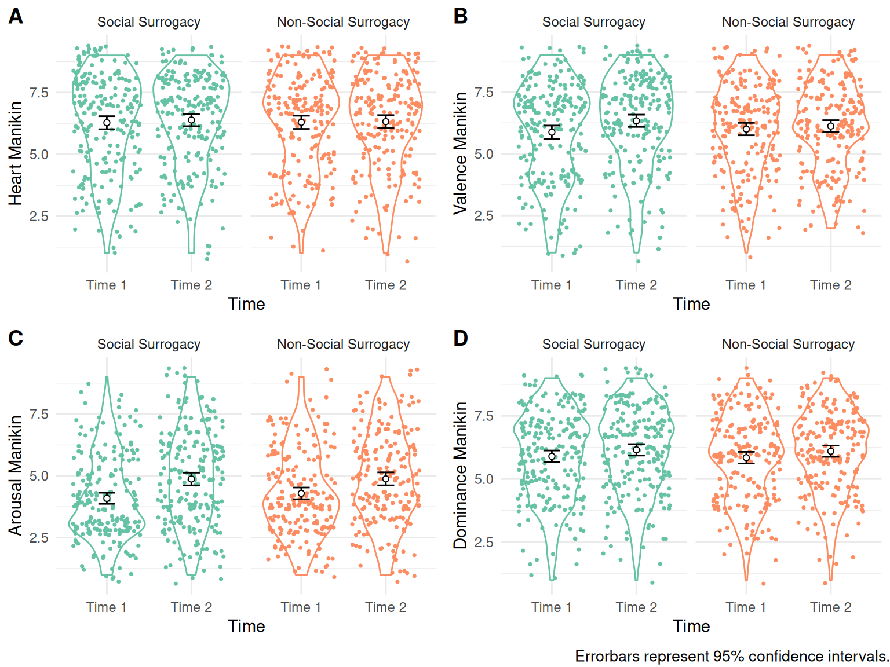

5 Study 2: Can Recalling A Game with Social Surrogates Replenish Belonging?
In this study, I contrasted video games with social surrogates (social surrogacy games) and those without (non-social surrogacy games) to examine if socially rejected people can replenish their belonging by remembering about a time playing a social surrogacy game vs. a non-social surrogacy game. I modeled the procedure after an existing study investigating the effect of recalling a favorite vs. non-favorite TV program on belonging after social rejection (Derrick, Gabriel, and Hugenberg 2009, Study 3). Based on the social surrogacy hypothesis, I expected that rejected people who write about a social surrogacy video game would have higher belonging than those who write about a non-social surrogacy video game (Hypothesis 1).
5.1 Method
5.1.1 Sample Size Rationale
To my knowledge, only one study tested whether recalling a media with or without social surrogates replenished belonging following social rejection (Derrick, Gabriel, and Hugenberg 2009, Study 2). I did not use the effect size reported in this study for the following reasons. First, an effect size observed in a single study can be upwardly biased and unreliable (Lakens 2017; Lane and Dunlap 1978). Second, the media used in the original study was a TV program, not a video game, and thus the effect size may not be compatible.
Instead, I again used an average effect size estimate (r = .21) across 474 meta-analyses as a starting point (Richard, Bond, and Stokes-zoota 2003) consistent with the procedure in Study 1. As mentioned, the safeguarded target effect size was Cohen’s d = 0.35. With 90% power to reduce Type II error and 5% alpha by convention, I plan to recruit 344 (172 per group) participants to detect the effect size of d = 0.35 in a two-group design. I also considered this effect size as the smallest effect size of interest for the equivalence test. Any effect sizes smaller than d = 0.35 was considered theoretically equivalent to zero in the context of the current study.
5.1.2 Participants
I recruited 426 participants from Prolific in total (Age: M = 24.92, SD = 7.33; 133 women, 287 men, and 6 not identifying as a woman or man). The final analytic sample after exclusions was 359. See Exclusions, Data Stopping Rule section below. Participants received $2.40 ($9.60 per hour rate x 15 minutes) for compensation. Only participants who had regularly played both video games with social surrogates and video games without social surrogates were eligible to participate. In a screening survey, participants first saw the description of single-player video games, and indicate (a) whether they played any video games with social surrogates and without social surrogates and (b) whether they enjoyed playing these video games:
Some video games can be played by yourself (a single-player mode), where you are not playing with other players. Other games have the option to play with other players (a multiplayer mode). We want you to exclusively focus on games that have a single-player mode. There are lots of different genres of single-player games.
One genre is single-player role-playing games (RPGs). These games always have stories that progress throughout the game, and they usually have non-player characters (NPCs). Classic examples of this type of game are Mass Effect, Zelda, Final Fantasy (single-player version), and Witcher. Question: Have you ever played a video game from this genre? (Yes/No)
IF YES: Do you enjoy playing video games from this genre? (Yes/No)
Other video games do not have these features, meaning they lack a story or non-player characters (NPCs) and focus on the mechanics of completing a specific task like a puzzle, beating the clock while completing a task, or earning points by doing a task. Classic examples are Poker, Solitaire, Tetris, or sports games that do not have teams like Pro Skater (skateboarding), Lonely Mountains Downhill (off-road biking). Question: Have you ever played a video game from these genres? (Yes/No)
IF YES: Do you enjoy playing video games from these genres? (Yes/No)
Only participants who indicated yes to all questions were invited to participate in the study. For social surrogate games, I focused on RPGs because people form strong parasocial relationships with other non-player characters, and people become immersed in the social worlds and stories presented in RPGs.
5.1.3 Procedure
Participants accessed an online survey, signed an informed consent, and completed the demographics. Participants also completed the baseline Heart Manikin (Time 1) and the original Self-Assessment Manikin. I included the original Self-Assessment Manikin items to reduce demand characteristics. Participants again saw the screener questions above. Instead of yes or no question, participants were asked to nominate one game from the genres described (i.e., “Please name one game from this genre that you enjoyed the most” for social surrogate games, “Please name one game from these genres that you enjoyed the most” for non-social surrogate games).
After naming their social surrogate and non-social surrogate video games, participants completed the social rejection essay task that was found effective in Study 1c. All participants wrote about a time when they felt rejected by a close other for 3 minutes:
Everyone has different types of relationships in their lives – some of which are very close relationships whereas others are not as close. Think of all of the people in your life that you feel very close to, and bring to mind a time when you felt rejected or excluded by one of those people. By “felt rejected” we mean that you felt this person did not value you or your relationship. In the space below, spend 3 minutes writing about this experience (i.e., a time when you felt rejected or excluded by a close other). Make sure to be as detailed as possible and describe not only what happened but also how you felt during the experience. Please continuously write for the entire 3 minutes, even if you have to repeat yourself. Do not worry about grammar or sentence structure, it is more important that you write about the experience continuously for 3 minutes.
After completing the social rejection essay, participants were randomly assigned to either the social surrogacy condition or the non-social surrogacy condition in the video game essay task, adapted from the previous study (Derrick, Gabriel, and Hugenberg 2009). Participants spent 5 minutes writing the essay. In the social surrogacy condition, participants wrote about a time they played the video game with social surrogates nominated earlier:
Please think of a time when you played X [the social surrogacy video game]. Who is (are) your favorite non-player character(s)? What was the story of the game you are thinking of? What happened to your favorite non-player character(s)? How did the gameplay make you feel? Write about everything you can remember about this particular game. Be as detailed as possible and try to relive playing the game in your mind as you write this description. Please continuously write for the entire 3 minutes, even if you have to repeat yourself. Do not worry about grammar or sentence structure, it is more important that you write about the experience continuously for 3 minutes.
In the non-social surrogate video game condition, participants wrote about a time they played the non-social surrogate game:
Please think of a time when you played X [the non-social surrogacy game]. What was (were) the goal(s)? What tasks were you supposed to complete? What was involved in completing the tasks? How did the gameplay make you feel? Write about everything you can remember about this particular game. Be as detailed as possible and try to relive playing the game in your mind as you write this description. Please continuously write for the entire 3 minutes, even if you have to repeat yourself. Do not worry about grammar or sentence structure, it is more important that you write about the experience continuously for 3 minutes.
After completing the video game essay, participants completed the Heart Manikin and the original Self-Assessment Manikin (Time 2). Next, participants answered whether they interacted with the non-player characters in their essay (Yes or No). If they answered yes, they completed the modified Inclusion of Self in Other Scale (Aron, Aron, and Smollan 1992) and the modified Parasocial Interaction—Process Scale (Schramm and Hartmann 2008). Then, participants completed the modified Single-Item Immersion Scale (Reysen et al. 2019), the modified Narrative Engagement Scale (Busselle and Bilandzic 2009), the on-the-fly measure of social world, and the Enjoyment Subscale of the Game User Experience Satisfaction Scale [GUESS; Phan, Keebler, and Chaparro (2016)]. Participants also answered the year that they regularly played the games, frequency, and duration of play in open-ended questions for the game in their essay. These responses were used for exploratory analyses (“When did you play game X?” [Example answer: 2010-2012]; “How frequently and long did you play the game X?” [Example answer: 2 times a week for 6 months]). Finally, participants completed the attention check.
5.1.4 Measures
The Heart Manikin was identical to the one used in Study 1a.
Modified Inclusion of Self in Other Scale—Parasocial Relationship with Characters. I adapted the Inclusion of Other in the Self Scale (Aron, Aron, and Smollan 1992) used in Study 1 to measure the strength of the parasocial relationship players formed with the non-player characters in the video games in the essay. I modified the labels for the circles as “Self” and “NPCs”. Participants chose a circle that best represents the relationship they experienced with the non-player characters in their essay.
Modified Parasocial Interaction—Process Scale. I adapted the Parasocial Interaction—Process Scale (12 items) (Schramm and Hartmann 2008) to measure the levels of parasocial interactions experienced in gameplay described in the essay task. I modified the language to refer to multiple characters in the video game (e.g., “I carefully followed the behavior of the non-player characters in the game”) instead of a single character. Participants indicated their answers on a 5-point scale (0 = Not at all, 4 = Very much). Cronbach’s alpha for the current sample was 0.80. I included this scale as an exploratory measure.
Modified Single-Item Immersion Scale. The single-item immersion scale is a one-item measure of immersion to media (Reysen et al. 2019). I modified the scale to measure immersion to the social world in the video game described in the essay task. Participants indicated their agreement with the statement, “While playing the game X [the game title they wrote an essay about] I felt completely immersed” on a 7-point scale (-3 = Strongly disagree, 3 = Strongly agree). I used the raw response score as an index. The scale has an adequate test-retest reliability (r = .71, over a semester) and convergent validity with other measures of immersion (Reysen et al. 2019).
Modified Narrative Engagement Scale. The Narrative Engagement Scale is a 12-item measure of engagement with a story (Busselle and Bilandzic 2009). The original statements in the scale refer to narrative engagement in a TV program or a film (e.g., “At times during the program, the story world was closer to me than the real world.”). I modified the statements to make references to the gameplay (e.g., “At times during the gameplay, the story world was closer to me than the real world.”). Participants indicated their agreement on these statements on a 7-point scale (-3 = Strongly disagree, 3 = Strongly agree). I used the aggregated average as an index. Cronbach’s alpha for the current sample was 0.60. The scale showed criterion validity with measures of media enjoyment (Busselle and Bilandzic 2009).
On-the-Fly Measure of Social World. I created an on-the-fly measure of the social world to measure how much people experienced the social world in the game. The scale had four items: “The video game presented stories that I immersed myself in”, “The video game presented another social world where I felt like I belonged”, “The video game had a social narrative that told an engaging story”, and “I found myself getting”lost” in the game’s story”. Participants indicated their agreement on these statements on a 7-point scale (-3 = Strongly disagree, 3 = Strongly agree). Cronbach’s alpha for the current sample was 0.88. I calculated an aggregated average as an index of social world. The scale’s validity and reliability are unknown.
Enjoyment Subscale of the Game User Experience Satisfaction Scale (GUESS). I adapted the Enjoyment Subscale of the Game User Experience Satisfaction Scale [GUESS; Phan, Keebler, and Chaparro (2016)]. The subscale has 5 items that refer to enjoyment in playing a video game: “I think the game is fun”, “I enjoy playing the game”, “I feel bored while playing the game” (reversed), “I am likely to recommend this game to others”, and “If given the chance, I want to play this game again”. Participants indicated their agreement to the statements on a 7-point scale (-3 = Strongly Disagree, 3 = Strongly Disagree) about the game that they wrote an essay about. I used the aggregated average as an index of enjoyment. Cronbach’s alpha for the current sample was 0.82.
Attention Check.Participants were asked about the nature of the first essay: “In today’s study, you were asked to write a couple of essays. In the first essay, what were you asked to write about?” Participants can answer this question as “about a time I felt rejected”, “about a time I felt accepted”, and “about my morning yesterday”. I marked participants as failing the attention check if they indicated that they were asked to write about a time they felt accepted or about their morning yesterday.
Participants also indicated the type of video game that they wrote in the video game essay: “In today’s study, which type of the video games were you asked to write an essay about?” Participants can answer this question as (1) “role-playing games (RPGs)”, (2) “video games without a storyline or NPCs”, or (3) “unsure”. I marked participants as failing the attention check if (a) they indicated that they wrote about video games without a storyline or NPCs in the social surrogate video game condition, (b) they indicated they wrote about RPGs in the non-social surrogate video game condition, or (c) they indicated unsure.
Debriefing Questions. I included two open-ended debriefing questions to gather qualitative information about participants’ experience in the study. One question asked about the purpose of the study (“During the study, did you wonder about the purpose of the study or procedures? If so, what did you think the study was about?”). Another question asked participants to write in anything that they wanted to share (“Is there anything you’d like to share with us about your experience in this study? Please use the space below to explain your answers to any of the previous questions, or to provide any feedback.”). I presented these questions in a counterbalanced order. I included these questions as exploratory without a pre-registered analysis plan.
5.1.5 Exclusion, Data Quality Check, and Stopping Rule
I excluded any participants who did not complete the entire study or failed the attention check (12 failed the rejection essay attention check, 12 failed the video game attention check). To ensure that participants nominated video games according to the instructions, three coders checked the nominated video game titles and mark each participant as following the instructions or not (yes or no). If a participant nominated either of their social or non-social video games incorrectly, the participant were marked as not following the instructions. I calculated the interrater agreement among the coders, and the two coders with the highest agreement determined the initial codes, and the third coder resolved the discrepancies. This procedure excluded 51 (12.14%) participants (overall interrater agreement: 80.60). I stopped recruitment when the sample size reached the target sample size after exclusions.
5.2 Results
Main Analysis. I performed Welch’s t-test to compare the post-essaay Heart Manikin scores (Time 2) between the participants who wrote about the social surrogacy video game and those who wrote about the non-social surrogacy video game. Based on the social surrogacy hypothesis, I expected that participants who wrote about the social surrogacy video game would have higher belonging than those who wrote about the non-social surrogacy video game. Contrary to this expectation, participants who wrote about the social surrogacy game (M = 6.37, SD = 1.88) reported similar levels of belonging compared with those who wrote about a non-surrogacy game (M = 6.27, SD = 1.94, t(355.1) = 0.49, p = .624, see Figure 5.1).
Since the obtained p-value was greater than .05, I performed the two one-sided tests of equivalence to examine if the obtained effect size was theoretically equivalent to zero (Lakens, 2017). I considered the effect size of d = 0.35 as the smallest effect size of interest (SESOI). Thus, any effect sizes between d = -0.35 and d = 0.35 are theoretically equivalent to zero. To compare the observed effect size with the SESOI, I calculated the 90% confidence interval around the observed effect size. Then, I compared this confidence interval with d = -0.35 and d = 0.35. I set the confidence to 90% because the TOST procedure involves two one-sided tests each with a 5% alpha (Lakens, 2017). The observed effect size estimate fell within -0.35 < d < 0.35, and its observed confidence interval did not include d = -0.35 or d = 0.35 (d = 0.05, 90%CI [-0.12, 0.23]). Thus, I consider the observed effect size as theoretically equivalent to zero.
Probing Effectiveness of Rejection Induction. I probed the effectiveness of the rejection induction by comparing the Heart Manikin scores at Times 1 and 2 among the participants in the non-social surrogate game condition. If the rejection induction was effective, I expected that these participants would report lower belonging after the rejection induction (Time 2) compared with the baseline (Time 1). To test this possibility, I ran a paired-samples t-test comparing the Heart Manikin scores at Times 1 vs. 2. Contrary to the prediction, participants in the non-surrogate essay condition reported similar levels of belonging at Times 1 (baseline, M = 6.18, SD = 1.97) and 2 (after two essays, M = 6.27, SD = 1.94), t(175.0) = -1.01, p = .312, see Figure 5.2. Given the non-significant results, I performed the TOST consistent with the main analysis. Results indicated that the obtained confidence interval fell within the SESOI (d = -0.04, 90%CI [-0.15, 0.08]), and thus I consider the effect size as theoretically equivalent to zero. Note that this analysis does not conclude the effectiveness of the rejection induction. The rejection induction could have been effective at first, but participants might have replenished their belonging due to passing of time–a point that I explore in more detail in the Discussion section below.
Exploratory Manipulation Check. To explore the effectiveness of the video game essay manipulation in inducing parasocial relationships, I used the combination of two sources of information: the yes/no question about the presence of parasocial interaction (i.e., whether participants interacted with the non-player characters in their essay), and the modified Inclusion of Self in the Other Scale (Aron et al., 1992). I coded each participant into three groups as follows. If a participant indicated that they did not interact with non-player characters (answering no to the yes/no question), they were coded as “did not interact with non-player characters” (Group 1). If they indicated yes, and they scored 0 on the modified Inclusion of Self in the Other Scale (Aron, Aron, and Smollan 1992), they were coded as “interacted with non-player characters but did not form parasocial relationships” (Group 2). All others received a code “interacted with non-player characters and formed parasocial relationships” (Group 3). I ran a two-way chi-square test (Essay: Social Surrogacy vs. Non-Social Surrogacy x Groups: 1, 2, vs. 3) to examine whether those in the social surrogacy essay condition (vs. the non-social surrogacy condition) indicated they interacted with an NPC (Group 2) and formed parasocial relationships (Group 3) rather than they did not interact with non-player characters (Group 1). This procedure allowed participants to indicate that they did not interact with non-player characters, a response option not available in the modified Inclusion of Self in the Other Scale (Aron, Aron, and Smollan 1992). Participants reported different levels of parasocial relationships across the essay conditions (X2(2, N = 359) = 184.93, p < .001, see Figure 5.3). Among the participants who wrote about a social surrogacy game, the majority reported forming a parasocial relationship with an NPC (88.52%), than not forming a parasocial relationship (3.28%), or not interacting with an NPC at all (8.2%). In contrast, among the participants who wrote about a non-social surrogacy game, the majority reported not interacting with an NPC at all (75.57%), followed by not forming a parasocial relationship (6.82), or forming a parasocial relationship with an NPC (17.61%).
To further probe the effectiveness of the manipulation on inducing parasocial relationships, I used the modified Parasocial Interaction-Process Scale (Schramm and Hartmann 2008). Only participants who indicated that they interacted with an non-player character answered this scale. I ran Welch’s t-test on the modified Parasocial Interaction-Process Scale to compare the levels of parasocial relationship participants formed in a social surrogacy game vs a non-surrogacy game. Results suggested that participants in the social surrogacy game condition (M = 2.32, SD = 0.65) reported higher parasocial interaction than those in the non-social surrogacy game condition (M = 1.77, SD = 0.75, t(59.6) = 4.43, p < .001, d = 0.82, 95%CI [0.47, 1.16], see Figure 5.4, Panel A).

To explore the effectiveness of the video game essay in inducing social worlds, I ran a Welch’s t-test to compare the scores of the Single-Item Immersion Scale (Reysen et al. 2019), the Narrative Engagement Scale (Busselle and Bilandzic 2009), and the on-the-fly measure of social world, between social surrogate vs. non-social surrogate video game essay conditions. I expected that rejected participants who wrote about the social surrogacy video game would report higher immersion and social worlds compared with those who wrote about their non-social surrogacy video game. Results were consistent with these predictions. Participants in the social surrogate essay condition reported higher immersion (M = 2.17, SD = 1.06) than those in the non-social surrogate essay condition (M = 1.66, SD = 1.36, t(330.3) = 3.95, p < .001, Figure 5.4, Panel B). Participants in the social surrogate essay condition reported higher narrative engagement (M = 0.88, SD = 0.76) than those in the non-surrogacy essay condition (M = 0.38, SD = 0.90, t(342.0) = 5.60, p < .001, Figure 5.4, Panel C). Participants in the social surrogate essay condition reported higher social worlds (M = 1.18, SD = 1.00) than those in the non-social surrogate essay condition (M = -1.47, SD = 1.46, t(306.0) = 19.99, p < .001, Figure 5.4, Panel D).
Note that the Inclusion of Self in the Other Scale (Aron, Aron, and Smollan 1992), the Single-Item Immersion Scale (Reysen et al. 2019), and the on-the-fly measure of social world have never been validated to measure social surrogates in video games, and thus I treat these analyses as exploratory. In the proposal, I pointed out that a failed manipulation check in this context can be ambiguous—such results can imply that (a) the manipulation was ineffective to induce parasocial relationships and social worlds, or (b) the measures were ineffective to capture the manipulated constructs. Even with the current positive results, I cannot rule out the latter possibility that the measures were ineffective in capturing social surrogates in video games. Accordingly, I do not conclude the effectiveness of the manipulation based on these exploratory analyses.
Exploratory Analysis of Enjoyment across Social Surrogacy vs. Non-Social Surrogacy Games. To explore whether levels of enjoyment differed for social Surrogacy vs. non-social Surrogacy video conditions, I performed Welch’s t-test. I did not have a priori hypothesis for this analysis. Participants in the social surrogate condition (M = 2.49, SD = 0.57) reported more enjoyment in playing a game in their essay than those in the non-social surrogate condition (M = 2.13, SD = 0.82, t(312.4) = 4.75, p < .001, Figure 5.5).

5.2.1 Unplanned Analyses
Below I report analyses that I did not plan in the proposal of this dissertation.
Self-Assessment Manikin Scores by Conditions and Time. To probe whether participants experienced different arousal, valence, dominance, after writing a social surrogate vs. non-surrogate essay, I ran 2 (Essay Condition: Social Surrogacy vs. Non-Social Surrogacy) x 2 (Time: Time 1 vs. Time 2) Mixed ANOVAs on the Self-Assessment Manikin Scores. For the Heart Manikin scores, there was no main effect of the Essay (F(1,420) = 0.03, p = .869, \(\eta^2_{G}\) < .001), no main effect of Time (F(1,420) = 1.24, p = .265, \(\eta^2_{G}\) < .001), and no Essay Type x Time interaction interaction (F(1,420) = 0.33, p = .568, \(\eta^2_{G}\) < .001). For the original Self-Assessment Manikins (Valence, Arousal, and Dominance), there were no main effect of the Essay type (F(1,420) = 0.07, p = .791, \(\eta^2_{G}\) < .001 for valence, F(1,419) = 0.56, p = .453, \(\eta^2_{G}\) < .001 for arousal, and F(1,420) = 0.10, p = .752, \(\eta^2_{G}\) < .001 for dominance) or no Essay x Time interaction (F(1,420) = 6.47, p = .011, \(\eta^2_{G}\) = .002 for valence, F(1,419) = 1.99, p = .159, \(\eta^2_{G}\) < .001 for arousal, and F(1,420) = 0.01, p = .920, \(\eta^2_{G}\) < .001 for dominance). However, there were main effects of Time across these measures (F(1,420) = 17.86, p < .001, \(\eta^2_{G}\) = .006 for valence, F(1,419) = 74.78, p < .001, \(\eta^2_{G}\) = .035 for arousal, and F(1,420) = 27.05, p < .001, \(\eta^2_{G}\) = .005 for dominance), suggesting that participants reported higher valence, arousal, and dominance at Time 2 than Time 1 (Figure 5.6).

Moderation by Indicators of Parasocial Relationships, Social World, and Enjoyment. I explored whether measures of parasocial relationship, social world, or enjoyment moderated the effects of the social surrogacy essay manipulation on Heart Manikin in a series of mixed models. I constructed a mixed model for each moderator variable (the manipulation check groups [Groups 1-3], Inclusion of the Other in Self Scale, Parasocial Interaction-Process Scale, Narrative Engagement, Single-Immersion Scale, and the On-The-Fly Measure of Social World, and enjoyment). Thus, each model contained the following fixed predictors: the moderator, the essay condition (Essay: social surrogacy vs. non-social surrogacy), Time (Time 1 vs. Time 2), the 2-way Moderator x Essay interaction, the 2-way Moderator x Time interaction, the 2-way Essay x Time interaction, and the 3-way Moderator x Essay x Time interaction. All categorical predictors were sum contrast-coded (effect-coded), and all continuous predictors were centered to the grand mean. Below, I only report positive results for the purpose of brevity. The full results are available in [Appendix]. Note that these results were not preregistered and thus prone to Type I error.
For the model with the Inclusion of the Other in Self scores as a moderator, there was a two-way interaction between the Inclusion of the Other in Self scores and Time (B = -0.08, SE = 0.03, t = -2.44, p = .015; Figure 5.7, Panel A). However, follow-up tests showed that the relationship between the Inclusion of the Other in Self scores and the Heart Manikin scores were not different from zero at both Times 1 and 2.
Similarly, for the model testing the Parasocial Interaction scores as a moderator, there was a two-way interaction between the Parasocial Interaction scores and Time (B = -0.15, SE = 0.07, t = -2.17, p = .030; Figure 5.7, Panel C). However, follow-up tests showed that the relationship between the Parasocial Interaction scores and the Heart Manikin scores were not different from zero at both Times 1 and 2.
For the model with the with Enjoyment with the moderator, participants reporting higher enjoyment reported higher Heart Manikin scores than those with lower enjoyment, regardless of the essay condition or time (B = 0.30, SE = 0.11, t = 2.65, p = .008; Figure 5.7, Panel G). These results suggest that participants who enjoyed the game in their essay reported more belonging across the study.
Bivariate Correlation Analysis. I explored associations among the measured variables in this study in a bivariate correlation analysis. I only report select positive associations here. For the full correlation matrix, see Table 2 in [Appendix]. Note that these analyses were not planned a priori, and prone to Type I error. Participants with higher Heart Manikin at Time 2 reported higher immersion and enjoyment, compared with those with lower Heart Manikin scores. Measures of parasocial relationship, social world, and enjoyment are positively correlated with each other. For example, participants who felt closer to a non-player character were more immersed, more engaged in the story, and experiencing more social world.
5.3 Discussion
Based on Hypothesis 1, I expected that participants in the social surrogacy game condition report more belonging than those in the non-social surrogacy game condition. The current results did not confirm this hypothesis. Instead, the people who wrote about the social surrogacy video game reported similar levels of belonging compared with the people who wrote about non-social surrogacy game. The difference was theoretically equivalence to zero according the equivalence test. The reasons for the current null results include: (a) Type II error, (b) ineffective social rejection induction or essay manipulations, (c) failure of the social rejection induction or the social surrogacy manipulation, (d) passage of time after rejection recovering belonging, (e) confusion in nominating video games, and (f) non-surrogacy video games providing belonging.
Type II Error: Failure to Detect a True Effect by Chance. We can attribute the current results to a Type II error, failing to observe a true effect by chance. I reduced the likelihood of the Type II error for the study by setting the power to .90 in the a priori power analysis. That being said, I assumed that the true effect was at least d = 0.35. A possibility remains that the true effect size was smaller than d = 0.35, and thus the current study was not effective for detecting the effect.
Failure of Inducing Social Rejection, or Manipulating Social Surrogacy. I also can attribute the current results to the ineffective induction of social rejection or the ineffective manipulation of social surrogacy. Participants may have not felt rejected by the rejection induction, or participants did not experience social surrogacy in the social surrogacy essays. However, I suggest that these possibilities are unlikely for the following reasons. First, the social rejection induction in this study was found highly effective in Study 1c (ARv1), using the same Heart Manikin Measure (d = -2.12, 95%CI [-2.41, -1.83]). Second, participants who wrote a social surrogacy essay reported more parasocial relationships, immersion, engagement with narrative, social world, and enjoyment than those who wrote a non-social surrogacy essay. Although I do not conclude about the effectiveness of the manipulations as planned, these results add to the confidence that the manipulations were relevant to social surrogacy. Overall, I am skeptical of a possibility that the social rejection induction or the social surrogacy manipulation failed in this study.
Time After Rejection Simply Recovering Belonging. Participants may have recovered their belonging simply because of the passage of time from the rejection essay. Past research has shown that participants ostracized in Cyberball (an online ball-tossing game) showed recovery towards positive affect after about 2 minutes (Wesselmann et al. 2012). In Study 1c (ARv1) and Study 1d (EVv1), rejected participants recovered belonging after socially rejected (see Figure 4.6 and Figure 4.8). Thus, in the same manner, the participants in this study could have recovered belonging simply after the 3-minute essay, regardless of the content of the essay.
Confusion in Nominating Video Games. Participants may have had a difficulty in following the instructions to nominate social surrogacy and non-social surrogacy games, and they might not be able to nominate correct type of games. I avoided this possibility in 2 ways, First, I provided descriptions and examples of social- and non-social surrogacy games in the instructions. Second, I excluded any participants that were deemed as not following the instructions in the exclusion coding procedure. Still, I cannot completely rule out this possibility because 12.14% of participants failed to follow the instructions as per the exclusion procedure, adding to a possibility that participants may have had a hard time understanding the instructions. I repeated the main analysis with the excluded participants and found results consistent with the sample with exclusions (see [Appendix][Main Analysis with Excluded Participants]).
Non-Social Surrogacy Video Games Providing Belonging. Another possible reason for the null results is that writing about non-social surrogacy games provided belonging. The social surrogacy hypothesis suggests that people can replenish belonging via a reminder of others—non-human entities that reminds of social connections such as pictures of friends, comfort food, and Facebook updates (Gabriel and Valenti 2017). The non-social surrogacy games in the current study could have served as reminders of others in a similar manner. For example, people who played Tetris with their close friends can remember their social connections while thinking about Tetris, and thus replenishing belonging. In Study 3, I eliminated this possibility by asking participants play a novel video game that they have never played before.
Overall, the current results did not support the social surrogacy hypothesis–I did not find evidence that people can replenish belonging via social surrogates in video games. Rejected participants reported similar levels of belonging regardless of writing a social surrogacy or non-surrogacy essay. The current results do not offer a clear answer to why all participants recovered belonging. As mentioned above, the current study had methodological limitations. In Study 3, I continued testing the social surrogacy hypothesis by a novel video game that directly manipulates social surrogates. This at minimum addressed the possible issues of unclear instructions and previous experience to a video game.